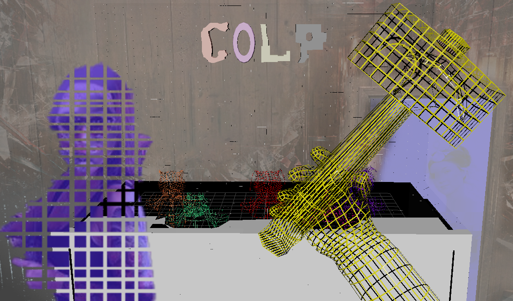

Open game ↗
PlayCanvas · Web3D · Full-Stack Development
Colp
Role: Solo Developer / Game Designer
Developed a arcade game built in PlayCanvas, leveraging Supabase for real-time cloud and session data, I self-taught audio production in under 3 months to make the OST and SFX using FL Studio and Adobe Audition. For the visual impact, I created frame animations and VFX through a Photoshop and JSON workflow — completing rapid asset iterations in under two hours to deliver an immersive and fully interactive experience.